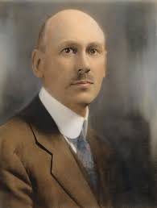
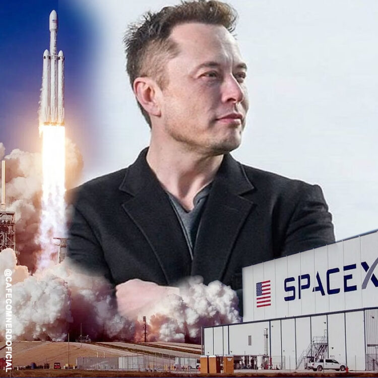
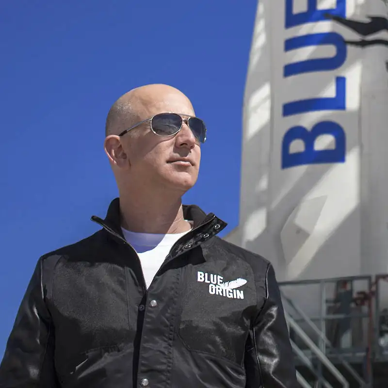
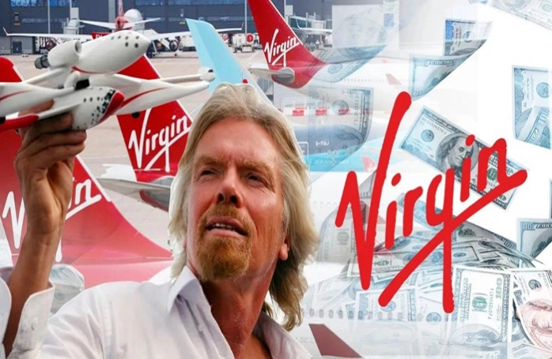
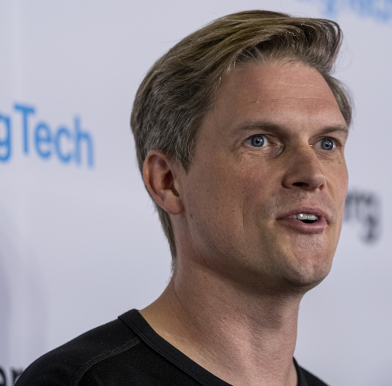
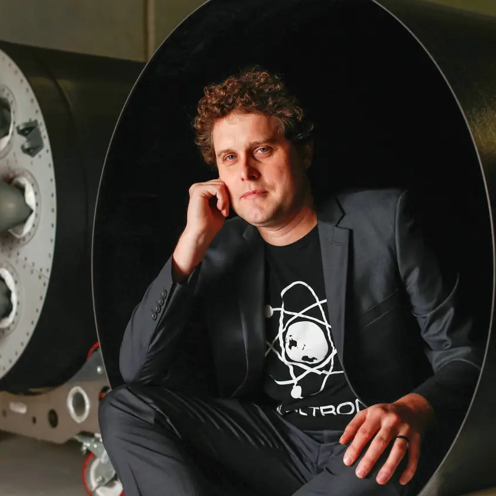

History
The idea of space rockets was scientifically conceived by two physicists: the Russian Konstantin Eduard Ziolkowski (1857-1935) and the American Robert Hutschings Goddard (1882-1945). On March 16, 1926, Goddard launched the first rocket powered by gasoline and liquid oxygen. 
Five years later, on March 13, 1931, the German engineer Reinhold Tiling managed to patent a technology later rediscovered by astronautics: the reusable rocket, powered by solid propellant.
Tiling was a visionary. His rocket launched on March 31, 1931 reached a height of almost 300 meters, when he opened his wings to land softly. The engineer planned to carry out, via rocket, mail services between the mainland and the East Frisian islands in northern Germany.
Companies
Despite being relatively new, SpaceX, Blue Origin and Virgin Galactic gained the spotlight for being created by billionaires and aerospace enthusiasts.
And competition for the new space race is fierce. SpaceX, by Elon Musk, and Blue Origin, by Jeff Bezos, face each other in court in a fight over contracts and mutual public stings of the two billionaires. Boeing and Embraer recently lost more than 3,000 professionals to Musk and Bezos' companies.
SpaceX
Founded by Tesla CEO Elon Musk, SpaceX emerged in the private space race market as a pioneer and, even though it is not listed, it already has a market value of $74 billion.
Among its accomplishments is being the first private company to complete manned and unmanned missions to the International Space Station. In September of this year, it completed Inspiration4's historic mission.
Musk has been one of the strongest advocates of a human landing on Martian lands.
Blue Origin
Founded by Amazon CEO Jeff Bezos in 2000, Blue Origin has exposure to several subsectors of the space industry and is also not listed on a stock exchange.
On July 20, 2021, it successfully launched the New Shepard spacecraft, which stayed in space for 10 minutes.
It became the first unmanned flight with an all-civilian crew (including Bezos).
Virgin Galactic (SPCE)
Listed on the New York Stock Exchange (NYSE) under the ticker SPCE since October 28, 2019, Virgin Galactic was founded in 2004 by English billionaire Richard Branson
In July of this year, Branson joined the club of space-traveling billionaires.
Astra Space
Founded by information technology executive Chris Kemp in 2006, Astra Space provides space launch platforms for small satellite operators and went public on July 1, 2021, becoming the first of its kind to go public. on Nasdaq under the ticker ASTRA.
To do this, it merged with Holicity, a SPAC that has investments from names like Bill Gates through the Pendrell Corp. sponsorship fund.
RocketLab
The North American RocketLab was founded in 2006 by Peter Back, an engineer from New Zealand. It is listed on Nasdaq, under the ticker RKLB since August 2021, when it went public after merging with SPAC Vector Acquisition.
Its Electron rocket is the second most frequently launched in the US annually, with successful missions delivered for commercial and government satellite operators.
Purpose
A space rocket is a means of transport for taking astronauts, equipment and satellites into Earth orbit (or out into space). To fulfill this purpose, the ship needs a jet engine
It's just that there's no oxygen in space, so you can't use conventional engines. To get around this, fuels charge your oxygen supply. Without this, combustion would not take place. And the ship would stay in place.
Rockets
There are three types of rocket, classified according to the type of fuel used. They are:
Solid fuel rocket
Compacted powder with a mixture of dry fuels and strong oxidizers, capable of releasing a lot of oxygen on combustion;
Liquid fuel rocket
Chambers separate fuels from oxidants, which only mix during ignition (when the rocket “turns on”). The most commonly used are hydrazine and liquid hydrogen.
Hybrid fuel rocket
Fuels and oxidants are in separate chambers and in different states (liquid/solid or gaseous/solid).
Use of rockets for society
This type of operation is of great importance for space exploration, astronomical research, telecommunications and also for the development of new navigation and propulsion systems, among others. Rockets are used to take astronauts and equipment to Earth orbit or beyond.
Starship Rockets
The complete vehicle architecture includes both launch vehicles and spacecraft that are intended to completely replace all of SpaceX's space hardware in the early 2020s, as well as ground infrastructure for rapid launch and relaunch, and transfer technology of fuels in zero gravity, to be deployed in low Earth orbit (LEO). The large payload for Earth orbit is up to 150 000 kg which makes Starship a super heavy-lift launch vehicle.
Including capabilities to support long-duration spaceflight in a cislunar environment and transport to Mars.
The ITS vehicle had been designed with a core diameter of 12m, while the Starship design was reduced to 9m, carrying only half the payload to LEO with just 42% takeoff thrust.
Methodologies
Rocket Project
1 - Specific Purpose:
Developing a small-scale rocket capable of suborbital launches for scientific experiments.
2 - Measurable Goals:
- Reach a minimum altitude of 100 km.
- Implement a rocket recovery system for reuse.
- Ability to carry a payload of up to 50 kg.
- Achieve a landing accuracy of +/- 1 km.
3 - Feasibility:
- Assess the availability of financial and technical resources for the project
- Verify the experience and knowledge of the team involved.
- Consider the regulations and permits required for suborbital launches.
4 - Relevance:
- Ensure that the project is aligned with the scientific and educational objectives of the organization.
- Establish partnerships with research institutions and universities to carry out scientific experiments.
5- Schedule:
- Phase 1: Design and simulation - 6 months.
- Phase 2: Rocket manufacturing and assembly - 8 months.
- Phase 3: Ground tests and systems integration - 2 months.
- Phase 4: Flight testing and performance enhancement - 6 months.
- Phase 5: Initial release and future iterations - ongoing.
Disclosure of the rocket project
1- Specific:
a. Publicize the successful launch of the developed rocket, highlighting its unique characteristics and scientific achievements.
2 - Measurable:
a. Achieve broad media coverage with stories in at least five media outlets.
b. Obtain a minimum of 10,000 views on a video promoting the launch on online platforms.
c. Achieve a 5% engagement rate on rocket-related social media posts.
3 - Attainable:
- Establish partnerships with space agencies, universities, and research institutions to increase rocket visibility.
- Develop an adequate media plan and budget to achieve outreach objectives.
4 - Relevant:
a. Highlight the scientific contributions of the rocket, emphasizing the experiments and research carried out during the suborbital flight.
b. Show how rocket development aligns with scientific and technological advances in the aerospace industry.
5 - Temporal:
a. Start outreach two months before scheduled release.
b. Hold a press conference one week after launch to share scientific findings and results
Inspiration for the rocket
The Satellite Launch Vehicle or SLV was a project started in the early 1970s by the Indian Space Research Organization to develop the technology needed to launch satellites. The project was led by APJ Abdul Kalam. The SLV was intended to reach a height of 400 km and carry a payload of 40 kg. It was a four-stage rocket with all solid propellant engines.
The first SLV launch took place in Sriharikota on August 10, 1979. The last SLV launch took place on April 17, 1983.